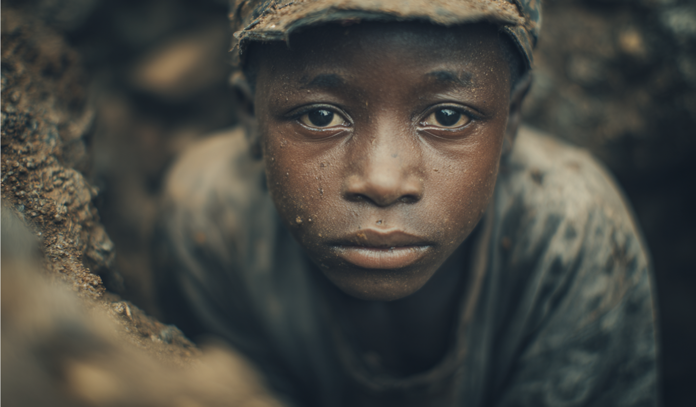
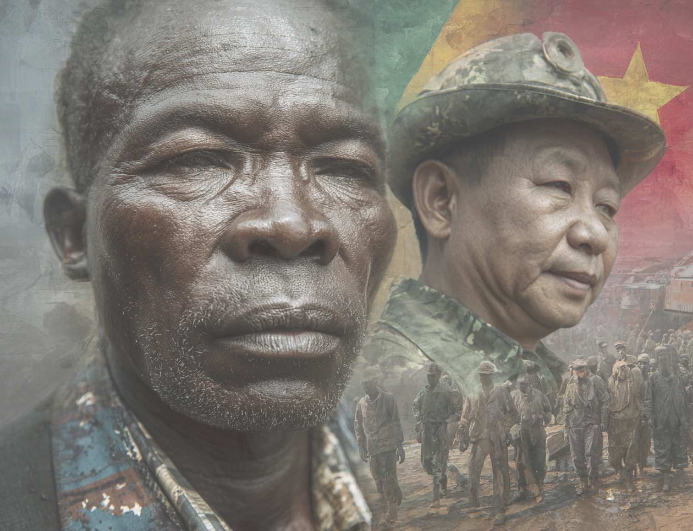
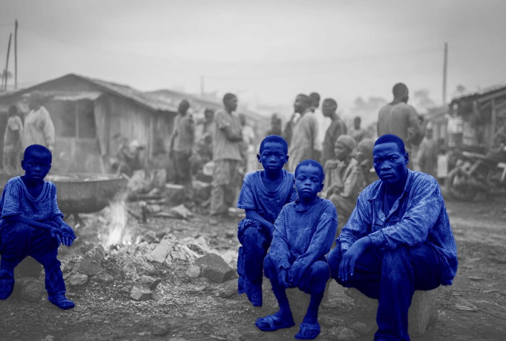

Interactieve multimedia story over cobalt in Congo voor het CBS
Onderzoek en gesprekken met CBS
In de eerste fase van dit project hebben we gesprekken gevoerd met het CBS om de opdracht en de informatiebehoefte goed te begrijpen. We hebben onderzocht wat zij precies willen communiceren over cobalt in Congo en voor welke doelgroep dit bedoeld is.
Deze gesprekken gaven richting aan het project en zorgden ervoor dat we de juiste focus konden leggen in de verdere uitwerking.

Onderzoek en informatieverzameling
Na de eerste gesprekken zijn we gestart met uitgebreid onderzoek naar cobaltwinning in Congo. We hebben informatie verzameld over de economische, sociale en ethische aspecten van de mijnindustrie. Dit hebben we gedaan door betrouwbare bronnen te analyseren en de context van het onderwerp goed in kaart te brengen.

Interviews en beeldmateriaal
Om het verhaal sterker en menselijker te maken hebben we interviews gehouden met betrokkenen en experts. Daarnaast hebben we passend beeldmateriaal verzameld dat de situatie in Congo visueel ondersteunt.
Deze combinatie van interviews en visuals gaf ons de mogelijkheid om het onderwerp beter te vertalen naar een begrijpelijk en impactvol verhaal.
Ontwikkeling interactieve multimedia story
Op basis van al het onderzoek, de interviews en het verzamelde materiaal hebben we een interactieve multimedia story ontwikkeld. In deze story wordt het verhaal over cobalt in Congo op een visuele en interactieve manier verteld. Gebruikers kunnen door het verhaal navigeren en zelf ontdekken wat de impact van de cobaltindustrie is.
Eindproduct en uitvoering
Uiteindelijk hebben we de interactieve story gepresenteerd en getest. Hierbij konden gebruikers door de verschillende onderdelen heen klikken en het verhaal op hun eigen tempo ervaren.
De reacties gaven waardevolle feedback en lieten zien dat de interactieve vorm helpt om een complex onderwerp zoals cobalt in Congo beter te begrijpen.
